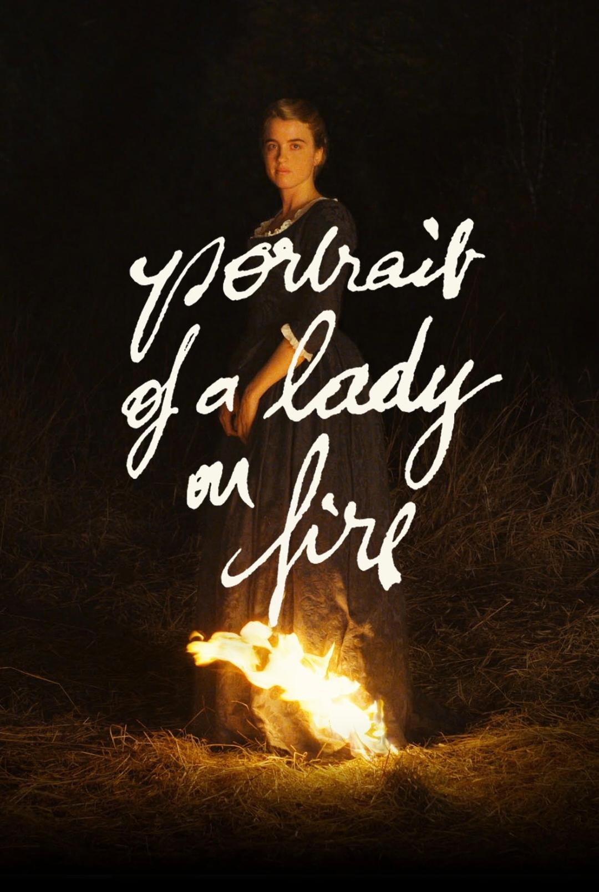
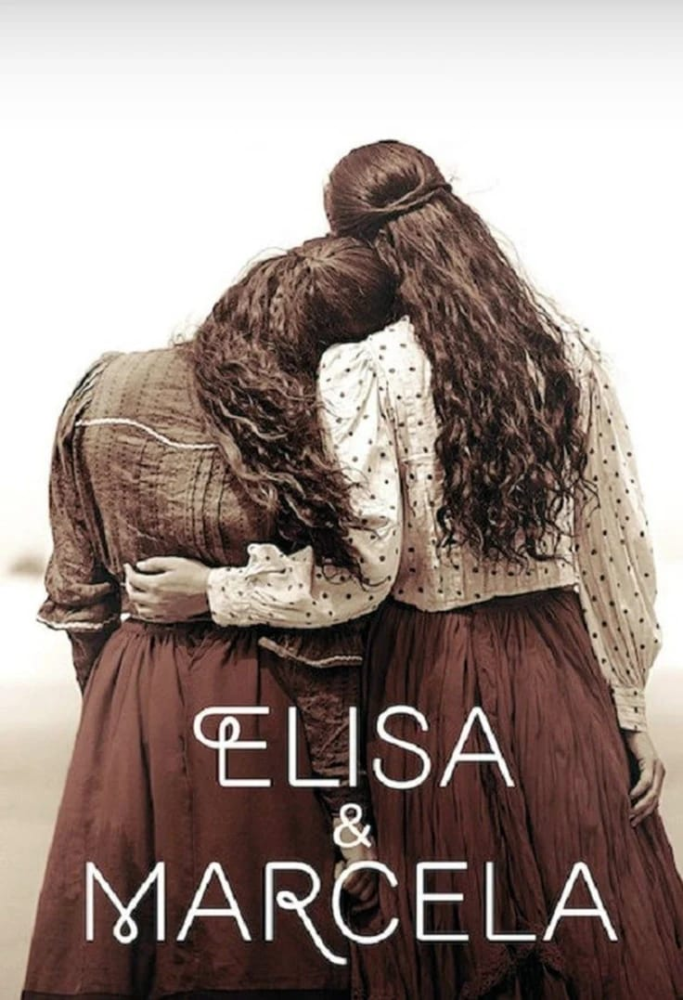
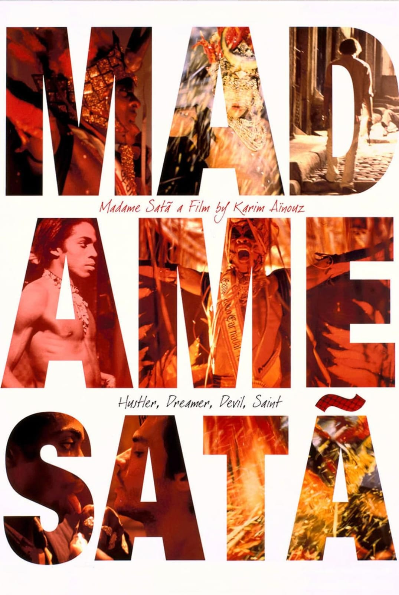
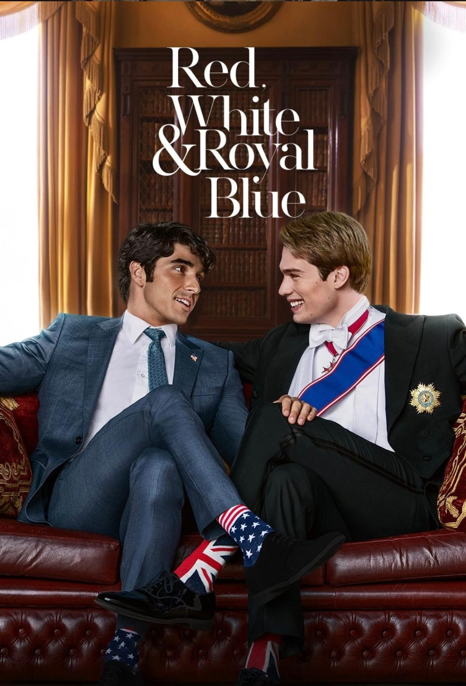
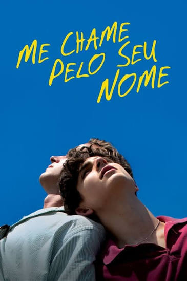
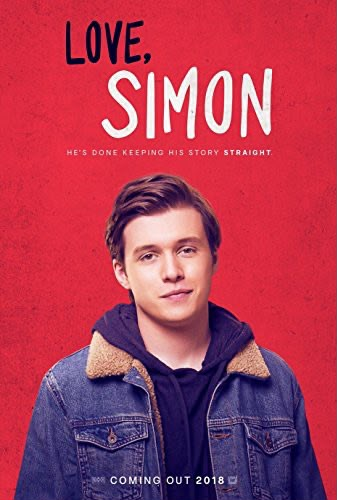
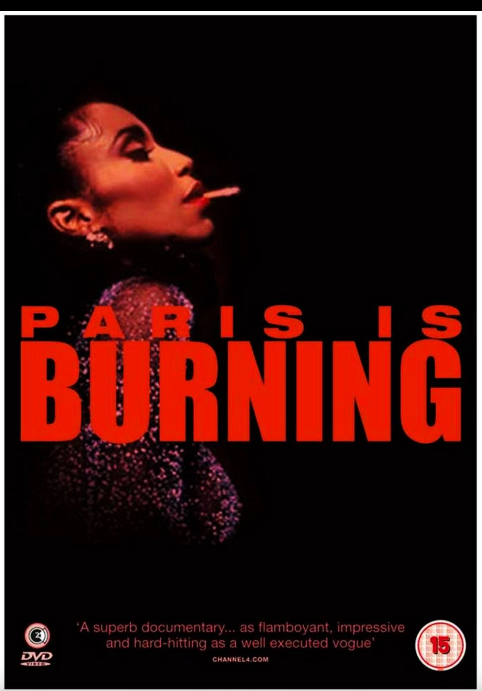

Cinema
Tribunal do Júri
- Simulação de julgamento
- Pensamento crítico
- Participação da turma
💛

O departamento de Cinema cuida das produções audiovisuais do BACKSTAGE — roteiro, direção e edição das peças que contam as histórias do grupo em imagem e movimento.

No final do século XVIII, a pintora Marianne é contratada para pintar secretamente o retrato de Héloïse, uma jovem prometida em casamento. Durante a convivência, as duas se apaixonam e vivem um romance intenso e proibido. O filme aborda amor, liberdade, memória e o papel das mulheres na sociedade da época.

Em 1901, na Galícia, Espanha, Elisa e Marcela se apaixonam enquanto estudam juntas. Como o casamento entre mulheres era ilegal e condenado pela sociedade e pela Igreja, Marcela assume a identidade masculina de "Mario" para que possam se casar na igreja. O filme acompanha o romance delas, o plano arriscado e o escândalo nacional que o casamento real causou na época.

Baseado em uma história real, o filme acompanha João Francisco dos Santos, um artista negro, transformista e ex-presidiário no Rio de Janeiro dos anos 1930. Enquanto enfrenta preconceito e violência, ele encontra nos palcos uma forma de expressar sua identidade como Madame Satã. A obra retrata resistência, liberdade e a luta por dignidade em uma sociedade marcada pela exclusão.

Alex, filho da presidente dos Estados Unidos, e o príncipe Henry, do Reino Unido, começam como rivais após um incidente público. Obrigados a fingir amizade, eles acabam desenvolvendo um romance inesperado. O relacionamento desafia expectativas, pressões políticas e as responsabilidades de suas posições.

Tendo como cenário o norte da Itália em 1983, Call Me by Your Name centra-se no romance entre Elio Perlman, um adolescente de 17 anos vivendo na Itália, e o assistente acadêmico Oliver.

Simon é um adolescente de 17 anos que tem uma vida aparentemente normal, mas guarda um segredo: ele é gay e ainda não contou para ninguém. Tudo muda quando ele começa a trocar e-mails anônimos com outro garoto da escola que também está passando pela mesma situação. Enquanto tenta descobrir quem é esse menino, Simon precisa lidar com o medo de se assumir, proteger seu segredo e encontrar coragem para viver seu primeiro amor. É um filme emocionante, divertido e muito fofo sobre aceitação, amizade e amor.

Antes do "voguing" virar hit no clipe da Madonna, ele já era resistência. Paris is Burning mergulha na ball culture underground de Nova York dos anos 80 — um universo criado por pessoas negras e latinas LGBTQ+ que foram rejeitadas por tudo: família, sociedade, governo. E o que elas fizeram? Criaram a própria família. Criaram arte. Criaram um mundo. As "houses" eram muito mais do que times numa competição — eram lar, acolhimento e identidade pra quem não tinha mais nada. Em plena crise da AIDS, com a pobreza batendo à porta e o preconceito em todo canto, essas pessoas se encontravam nos bailes e existiam com toda a glória que o mundo tentava negar a elas.
Seu feedback ajuda o departamento a evoluir.